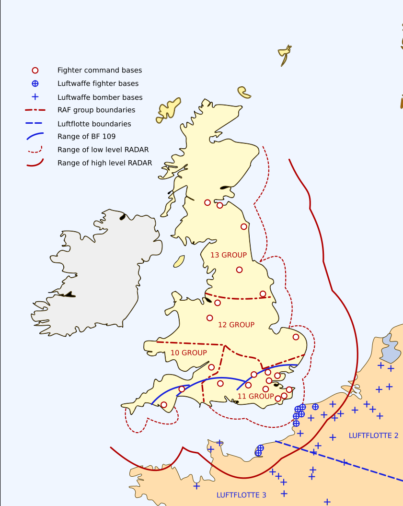

Batalla de Inglaterra
El primer gran enfrentamiento de la historia librado enteramente en el aire: la Real Fuerza Aérea británica (RAF) contra la Fuerza Aérea alemana (Luftwaffe) por el control de los cielos del Reino Unido.
Datos
| Fechas | 10 de julio – 31 de octubre de 1940 |
|---|---|
| Lugar | Espacio aéreo del Reino Unido y el Canal de la Mancha |
| Resultado | Victoria británica decisiva; primer gran fracaso de la Alemania nazi |
| Bando atacante | Alemania (Luftwaffe), con un pequeño contingente italiano |
| Defensores | Reino Unido (RAF), con pilotos de la Commonwealth, Polonia, Checoslovaquia y otros países ocupados |
| Comandantes alemanes | Hermann Göring, Albert Kesselring, Hugo Sperrle |
| Comandantes británicos | Hugh Dowding (Mando de Caza), Keith Park, Trafford Leigh-Mallory |
| Cazas principales | Supermarine Spitfire y Hawker Hurricane (RAF) contra Messerschmitt Bf 109 (Luftwaffe) |
Bandos
RAF (defensor)
Luftwaffe (atacante)
Cuerpo Aéreo Italiano
Introducción
Tras la caída de Francia en junio de 1940, el Reino Unido quedó solo frente a Alemania. Hitler planeaba invadir las islas británicas (Operación León Marino, Unternehmen Seelöwe), pero para ello necesitaba primero destruir a la RAF y lograr la superioridad aérea sobre el Canal de la Mancha. Sin dominio del aire, ninguna flota de invasión podría cruzar con seguridad.
Entre julio y octubre de 1940, la Luftwaffe lanzó una campaña sostenida para aniquilar a la aviación británica. La RAF, en inferioridad numérica, resistió apoyada en una red de radares, un mando centralizado y la determinación de sus pilotos. Fue la primera gran batalla decidida únicamente por el poder aéreo.
Razones
- Preparar la invasión: la superioridad aérea era la condición previa de la Operación León Marino, el plan alemán para desembarcar en el sur de Inglaterra.
- Forzar la rendición británica: Hitler esperaba que, tras la caída de Francia, el Reino Unido negociara la paz. Al negarse Churchill, la presión aérea buscaba quebrar su voluntad de resistir.
- Cortar el poder aéreo enemigo: destruir los cazas, los aeródromos y la industria aeronáutica británica para dejar indefensas a las islas.
Cuerpo (desarrollo)
La batalla se desarrolló en fases. En julio comenzó el Kanalkampf ("combate del Canal"): ataques alemanes contra convoyes y puertos para atraer a los cazas de la RAF al combate.
El 13 de agosto, la Luftwaffe lanzó el Día del Águila (Adlertag), el inicio de una ofensiva a gran escala contra los aeródromos y las estaciones de radar del sur de Inglaterra. Durante finales de agosto y comienzos de septiembre, esta presión sobre las bases del Mando de Caza llevó a la RAF al límite de sus fuerzas.
El punto de inflexión llegó a comienzos de septiembre, cuando la Luftwaffe cambió de objetivo y pasó a bombardear Londres y otras ciudades (el inicio del Blitz). Este giro alivió la presión sobre los aeródromos y permitió a la RAF recuperarse. El 15 de septiembre —hoy celebrado como el "Día de la Batalla de Inglaterra"— la RAF infligió graves pérdidas a una gran incursión alemana.
Incapaz de lograr la superioridad aérea y con pérdidas insostenibles, Alemania aplazó indefinidamente la Operación León Marino. Los ataques diurnos disminuyeron hacia octubre, dando paso a la campaña de bombardeos nocturnos del Blitz.

Mapa estratégico (Wikimedia Commons). Muestra las flotas aéreas alemanas (Luftflotte 2 y 3) desplegadas en la Europa ocupada, los grupos del Mando de Caza de la RAF, las estaciones de radar y el corto alcance del caza Bf 109, que solo podía escoltar a los bombarderos unos minutos sobre Inglaterra. Leyenda original en inglés, traducida arriba.
Conclusión
La Batalla de Inglaterra fue la primera gran derrota de la Alemania nazi y el primer objetivo estratégico que no logró alcanzar. Al fracasar en obtener la superioridad aérea, la invasión del Reino Unido quedó cancelada de hecho.
- El Reino Unido se mantuvo en la guerra, conservando una base desde la que, años después, se lanzaría la liberación de Europa occidental.
- Se demostró que la Blitzkrieg tenía límites: no bastaba contra un enemigo protegido por el mar, el radar y una fuerza aérea bien organizada.
- La victoria tuvo un enorme valor moral para los Aliados en el momento más sombrío de la guerra.
"Nunca tantos debieron tanto a tan pocos." — Winston Churchill, sobre los pilotos de la RAF.
Curiosidades
- "The Few" (los pocos): así se conoció a los pilotos de la RAF, a partir de la célebre frase de Churchill. Muchos eran muy jóvenes y con escasas horas de vuelo.
- Pilotos de muchas naciones: junto a los británicos combatieron polacos, checos, canadienses, australianos, neozelandeses y otros. El Escuadrón 303 polaco fue uno de los más eficaces de toda la batalla.
- Spitfire y Hurricane: aunque el Spitfire se llevó la fama, fue el más numeroso Hurricane el que derribó más aviones enemigos durante la batalla.
- El radar, arma secreta: la red Chain Home permitía detectar las incursiones con antelación, de modo que la RAF no tenía que mantener patrullas constantes y podía concentrar sus cazas donde eran necesarios.
Teorías
Debates e interpretaciones historiográficas, presentados como tales:
- El error de bombardear Londres: se debate si el cambio de objetivo de los aeródromos a las ciudades fue el gran error alemán que salvó a la RAF. Algunos historiadores matizan que el Mando de Caza no estaba tan cerca del colapso como se creyó, pero la mayoría coincide en que el giro alivió una presión crítica.
- ¿Era viable la Operación León Marino? Muchos historiadores dudan de que Alemania pudiera haber invadido con éxito el Reino Unido aun con superioridad aérea, dada la debilidad de su marina frente a la Royal Navy.
- La polémica del "Gran Ala": dentro de la RAF se discutió si era mejor enviar grandes formaciones de cazas concentradas (la tesis de Leigh-Mallory y Bader) o escuadrones más pequeños y rápidos de reacción (la de Park). El debate sobre la táctica óptima continúa entre los historiadores.